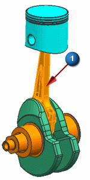
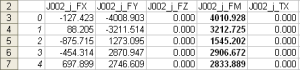

捕捉载荷
您感兴趣的是连杆上的反作用力。
 分析→运动→载荷传递
分析→运动→载荷传递
-



-
动画
-
 播放
播放在仿真中的每一个时间步，软件都会把每一个连接到连杆的运动对象的反作用力和力矩写入一个电子表格中(在这个练习里，有两个运动副，J001和 J002)。

电子表格包含平动力大小以及力的分量大小，也有力矩大小和力矩分量大小，这个信息也直接保存到运动仿真文件中。
注意
在一些情况下，您可能会收到一条信息，告诉您这个动作无法完成，因为其它应用程序正忙，点击转到以激活正忙的应用程序并修复此问题，如果看见这条信息，点击信息框中的重试，这将引起电子表格被填充。
显示在电子表格中的载荷对应于绝对坐标系，将保存在运动仿真文件(就是您要导入到高级仿真中的文件)中的载荷对应于运动对象的坐标系，它在各个时间步都发生变化。
在 NX 图形窗口中，一个自由体符号显示在选定的连杆上，动态指示反作用力的方向和大小。
注释
机构中的反作用力矩非常小。
保持电子表格和载荷传递对话框打开，以在下一步中使用。